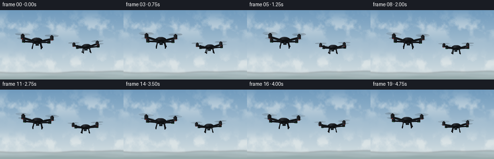
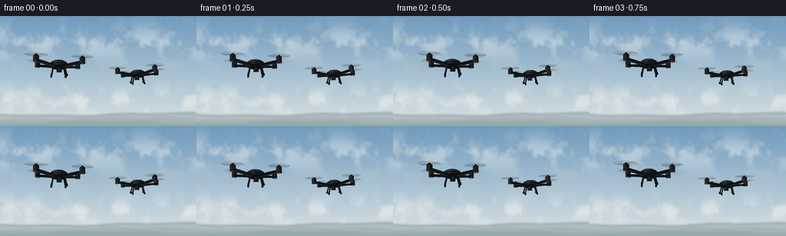

CODING AGENTS AS PIXEL WORLD MODELS
traex/GPT-6.1-Sol · instance_preservation_0042
点击播放 · 原生 RGB 像素
逐轮保存的候选
回放视频、检查图与代码变化。
每份候选均可单独播放。实际图片检查记录在下方工具轨迹中。
候选 01播放与检查图
点击播放 · 原生 RGB 像素


展开代码变化
--- 上一保存版本
+++ 本次保存版本
@@ -0,0 +1,203 @@
+"""Generate two matte-black quadcopters hovering in an open sky.
+Pure procedural geometry, projection, light, and antialiasing; no assets.
+"""
+from pathlib import Path
+import json, math
+import numpy as np
+from PIL import Image, ImageDraw, ImageFilter
+import artifact_io
+
+ROOT = Path(__file__).resolve().parent
+SPEC = json.loads((ROOT / 'task_spec.json').read_text())
+W, H, S = SPEC['width'], SPEC['height'], 4
+SW, SH = W*S, H*S
+rng = np.random.default_rng(48)
+
+# A softly graduated blue sky with distant, defocused cloud wisps.
+def sky():
+ yy, xx = np.mgrid[0:SH, 0:SW].astype(float)
+ y = yy / SH
+ top = np.array([111, 154, 189.])
+ bottom = np.array([217, 226, 227.])
+ arr = top[None,None,:]*(1-y[:,:,None]) + bottom[None,None,:]*y[:,:,None]
+ noise = np.zeros((SH,SW))
+ for grid, amplitude in [(7,.52),(15,.25),(32,.13),(70,.06)]:
+ small = Image.fromarray(rng.integers(0,256,(grid,grid*2),dtype=np.uint8))
+ noise += np.asarray(small.resize((SW,SH),Image.Resampling.BICUBIC))/255*amplitude
+ cloud = np.clip((noise-.42)*3.8,0,1)
+ envelope = (np.exp(-((y-.24)/.16)**2)*.42 + np.exp(-((y-.77)/.12)**2)*.48)
+ cloud *= envelope
+ arr = arr*(1-cloud[:,:,None]) + np.array([245,246,242])*cloud[:,:,None]
+ arr += (rng.random((SH,SW,1))-.5)*.6
+ im = Image.fromarray(np.uint8(np.clip(arr,0,255)))
+ land = Image.new('RGBA',(SW,SH))
+ d=ImageDraw.Draw(land)
+ for layer in range(3):
+ pts=[]
+ for px in range(-10,SW+11,8):
+ x=px/S
+ h=129+layer*5 + 1.6*math.sin(x*.021+layer) + .7*math.sin(x*.07+layer*2)
+ pts.append((px,h*S))
+ d.polygon(pts+[(SW,SH),(0,SH)],fill=[(145,167,170,135),(131,152,156,150),(117,142,143,170)][layer])
+ land=land.filter(ImageFilter.GaussianBlur(S*1.5))
+ return Image.alpha_composite(im.convert('RGBA'),land)
+
+BG=sky()
+LIGHT=np.array([-.5,.82,-.28]); LIGHT/=np.linalg.norm(LIGHT)
+
+class Model:
+ def __init__(self): self.faces=[]
+ def face(self,points,color,alpha=255,kind='solid'):
+ self.faces.append((np.array(points,dtype=float),color,alpha,kind))
+ def box(self,center,size,color):
+ c=np.array(center); x,y,z=np.array(size)/2
+ v=c+np.array([[-x,-y,-z],[x,-y,-z],[x,y,-z],[-x,y,-z],[-x,-y,z],[x,-y,z],[x,y,z],[-x,y,z]])
+ for ids in [[0,3,2,1],[4,5,6,7],[0,1,5,4],[3,7,6,2],[0,4,7,3],[1,2,6,5]]:
+ self.face(v[ids],color)
+ def cylinder(self,a,b,r,color,n=14,r2=None):
+ a,b=np.array(a),np.array(b); axis=b-a;axis/=np.linalg.norm(axis)
+ helper=np.array([0.,1,0]) if abs(axis[1])<.8 else np.array([1.,0,0])
+ u=np.cross(axis,helper);u/=np.linalg.norm(u);v=np.cross(axis,u)
+ q=np.arange(n)*2*math.pi/n
+ circle=np.cos(q)[:,None]*u+np.sin(q)[:,None]*v
+ va=a+r*circle;vb=b+(r if r2 is None else r2)*circle
+ self.face(va[::-1],color); self.face(vb,color)
+ for i in range(n):
+ j=(i+1)%n
+ self.face([va[i],va[j],vb[j],vb[i]],color)
+ def ellipsoid(self,c,r,color,n=36,m=16):
+ c=np.array(c);r=np.array(r)
+ vertices=[]
+ for j in range(m+1):
+ phi=-math.pi/2+math.pi*j/m
+ vertices.append(np.array([[math.cos(phi)*math.cos(2*math.pi*i/n),math.sin(phi),math.cos(phi)*math.sin(2*math.pi*i/n)] for i in range(n)])*r+c)
+ for j in range(m):
+ for i in range(n):
+ k=(i+1)%n
+ self.face([vertices[j][i],vertices[j+1][i],vertices[j+1][k],vertices[j][k]],color)
+
+
+def drone(t,idx):
+ m=Model()
+ black=(24,27,31); shell=(29,32,37); metal=(40,43,47)
+ # Wide X-frame with tapered support arms and inset upper carbon panels.
+ motor_positions=[]
+ for sx in [-1,1]:
+ for sz in [-1,1]:
+ end=np.array([sx*.87,.08,sz*.66])
+ motor_positions.append(end)
+ a=np.array([sx*.23,-.015,sz*.16])
+ direction=end-a
+ side=np.array([-direction[2],0,direction[0]]); side/=np.linalg.norm(side)
+ verts=[a+side*.088+[0,.035,0],a-side*.088+[0,.035,0],end-side*.064+[0,.035,0],end+side*.064+[0,.035,0],a+side*.088-[0,.055,0],a-side*.088-[0,.055,0],end-side*.064-[0,.055,0],end+side*.064-[0,.055,0]]
+ for ids in [[0,1,2,3],[7,6,5,4],[0,4,5,1],[1,5,6,2],[2,6,7,3],[3,7,4,0]]:
+ m.face(np.array(verts)[ids],black)
+ m.cylinder(end+[0,-.075,0],end+[0,.15,0],.108,metal,20)
+ m.cylinder(end+[0,.135,0],end+[0,.17,0],.091,(19,21,24),20)
+ # Tiny navigation lamps, on the underside of each motor.
+ led=(65,173,102) if sz==1 else (182,46,38)
+ m.ellipsoid(end+[sx*.018,-.082,-.01],(.045,.018,.035),led,12,6)
+ # Distinct rounded upper hull and lower frame; high polygon count for smooth shading.
+ m.ellipsoid((0,-.02,0),(.385,.133,.45),black)
+ m.ellipsoid((0,.065,-.01),(.355,.146,.42),shell)
+ # Narrow top access panel, unobtrusive subtle surface detail.
+ m.ellipsoid((0,.174,-.015),(.235,.041,.265),(23,26,30),28,10)
+ m.box((0,.210,-.10),(.084,.010,.017),(69,73,78))
+ # Landing rails hang below the aircraft, leaving visible air between parts.
+ for sx in [-1,1]:
+ for sz in [-1,1]:
+ m.cylinder((sx*.22,-.075,sz*.24),(sx*.30,-.405,sz*.29),.026,black,12)
+ m.cylinder((sx*.30,-.412,-.41),(sx*.30,-.412,.39),.03,(20,23,26),14)
+ for z in [-.35,.32]:
+ m.cylinder((sx*.30,-.434,z-.05),(sx*.30,-.434,z+.05),.036,(13,16,19),12)
+ # Stabilized forward-facing camera beneath the nose.
+ m.cylinder((0,-.1,-.24),(0,-.235,-.24),.042,(49,52,56))
+ m.box((0,-.24,-.28),(.19,.135,.14),(22,25,29))
+ m.cylinder((0,-.24,-.34),(0,-.24,-.379),.068,(72,77,81),24)
+ m.cylinder((0,-.24,-.379),(0,-.24,-.385),.056,(9,13,18),24)
+ m.cylinder((0,-.24,-.386),(0,-.24,-.388),.039,(22,40,51),24)
+ m.ellipsoid((-.015,-.219,-.389),(.012,.008,.003),(115,157,173),12,6)
+
+ # Translucent rotor disks and sweeping blade streaks show continuous spin.
+ for rotor,end in enumerate(motor_positions):
+ ctr=end+[0,.192,0]
+ radius=.43
+ angles=np.linspace(0,2*math.pi,65)[:-1]
+ disk=ctr+np.stack([radius*np.cos(angles),np.zeros(len(angles)),radius*np.sin(angles)],1)
+ m.face(disk,(26,29,32),30,'prop')
+ # Blades sampled over a short shutter interval (persistent shape, changing phase).
+ phase=t*24.7 + rotor*1.71 + idx*.8
+ for trail in range(7):
+ a=phase-trail*.11
+ for half in [0,math.pi]:
+ angle=a+half
+ u=np.array([math.cos(angle),0,math.sin(angle)])
+ v=np.array([-math.sin(angle),0,math.cos(angle)])
+ pts=[ctr+u*.065-v*.020,ctr+u*.39-v*.028,ctr+u*.43+v*.015,ctr+u*.10+v*.033]
+ m.face(pts,(15,18,21),22 if trail>0 else 49,'prop')
+ m.cylinder(ctr+[0,-.01,0],ctr+[0,.027,0],.047,(36,39,43),16)
+ return m
+
+
+def rotation(yaw,pitch,roll):
+ cy,sy=math.cos(yaw),math.sin(yaw)
+ cp,sp=math.cos(pitch),math.sin(pitch)
+ cr,sr=math.cos(roll),math.sin(roll)
+ return np.array([[cr,-sr,0],[sr,cr,0],[0,0,1]]) @ np.array([[1,0,0],[0,cp,-sp],[0,sp,cp]]) @ np.array([[cy,0,sy],[0,1,0],[-sy,0,cy]])
+
+
+def render(t):
+ objects=[]
+ for idx in [0,1]:
+ phase=idx*1.9
+ if idx==0:
+ center=np.array([-1.62+.045*math.sin(t*.85),1.55+.053*math.sin(t*1.40),9.0+.05*math.sin(t*.65)])
+ yaw=-.23+.035*math.sin(t*.7)
+ else:
+ center=np.array([1.91+.056*math.sin(t*.72+phase),1.39+.049*math.sin(t*1.35+phase),10.85+.06*math.sin(t*.6+phase)])
+ yaw=.27+.038*math.sin(t*.65+phase)
+ R=rotation(yaw,.025*math.sin(t*1.15+phase),.022*math.sin(t*1.6+phase))
+ model=drone(t,idx)
+ for pts,col,alpha,kind in model.faces:
+ p=pts@R.T+center
+ cross=np.cross(p[1]-p[0],p[2]-p[0]); norm=np.linalg.norm(cross)
+ if norm>1e-9: normal=cross/norm
+ else: normal=np.array([0,1,0])
+ # Polygon faces are shaded with daylight plus broad studio-like sky reflection.
+ if kind=='solid':
+ nl=max(0,np.dot(normal,LIGHT))
+ view=-p.mean(0);view/=np.linalg.norm(view)
+ half=LIGHT+view;half/=np.linalg.norm(half)
+ spec=max(0,np.dot(normal,half))**28
+ color=np.array(col)*(.49+.75*nl)+np.array([14,17,20])*.19+spec*38
+ # Sky reflection gives the black surfaces readable, soft edges.
+ color+=max(0,normal[1])*4
+ color=np.clip(color,0,255).astype(int)
+ else: color=np.array(col)
+ xy=np.stack([128+285*p[:,0]/p[:,2],114-285*p[:,1]/p[:,2]],1)*S
+ objects.append((p[:,2].mean(),xy,tuple(color.tolist())+(alpha,),kind))
+ im=BG.copy()
+ # Painter compositing back-to-front; rotor opacity blends with the sky and body.
+ d=ImageDraw.Draw(im,'RGBA')
+ for depth,poly,color,kind in sorted(objects,key=lambda e:e[0],reverse=True):
+ coords=[tuple(q) for q in poly]
+ if color[3]==255:
+ d.polygon(coords,fill=color)
+ else:
+ # Drawing on RGB with RGBA mode performs true opacity compositing.
+ # A tiny local overlay avoids full-frame allocations for each blade.
+ xmin=max(0,int(poly[:,0].min())-1);ymin=max(0,int(poly[:,1].min())-1)
+ xmax=min(SW,int(poly[:,0].max())+2);ymax=min(SH,int(poly[:,1].max())+2)
+ if xmax<=xmin or ymax<=ymin: continue
+ patch=Image.new('RGBA',(xmax-xmin,ymax-ymin))
+ pd=ImageDraw.Draw(patch)
+ pd.polygon([(x-xmin,y-ymin) for x,y in coords],fill=color)
+ im.alpha_composite(patch,(xmin,ymin))
+ d=ImageDraw.Draw(im,'RGBA')
+ im=im.convert('RGB').resize((W,H),Image.Resampling.LANCZOS)
+ return np.asarray(im,dtype=np.uint8)
+
+if __name__=='__main__':
+ frames=np.stack([render(i/SPEC['fps']) for i in range(SPEC['frames'])])
+ artifact_io.save(frames,ROOT)
+ print(f'Saved {len(frames)} RGB frames, {W}x{H}, {SPEC["fps"]} fps to {ROOT}')
可观测工具轨迹
实际执行的命令与返回图片。
命令 1exit 0
/bin/bash -lc "ls -la && cat prompt.txt && printf '\\n--- RULES ---\\n' && cat GENERATION_RULES.md && printf '\\n--- SPEC ---\\n' && cat task_spec.json"
命令 2exit 0
/bin/bash -lc "cat artifact_io.py && printf '\\n--- Libraries ---\\n' && python - <<'PY'
import numpy,PIL
print('numpy',numpy.__version__)
print('PIL',PIL.__version__)
PY"命令 3exit 0
/bin/bash -lc "cat > generate.py <<'PY'
\"\"\"Generate two matte-black quadcopters hovering in an open sky.
Pure procedural geometry, projection, light, and antialiasing; no assets.
\"\"\"
from pathlib import Path
import json, math
import numpy as np
from PIL import Image, ImageDraw, ImageFilter
import artifact_io
ROOT = Path(__file__).resolve().parent
SPEC = json.loads((ROOT / 'task_spec.json').read_text())
W, H, S = SPEC['width'], SPEC['height'], 4
SW, SH = W*S, H*S
rng = np.random.default_rng(48)
# A softly graduated blue sky with distant, defocused cloud wisps.
def sky():
yy, xx = np.mgrid[0:SH, 0:SW].astype(float)
y = yy / SH
top = np.array([111, 154, 189.])
bottom = np.array([217, 226, 227.])
arr = top[None,None,:]*(1-y[:,:,None]) + bottom[None,None,:]*y[:,:,None]
noise = np.zeros((SH,SW))
for grid, amplitude in [(7,.52),(15,.25),(32,.13),(70,.06)]:
small = Image.fromarray(rng.integers(0,256,(grid,grid*2),dtype=np.uint8))
noise += np.asarray(small.resize((SW,SH),Image.Resampling.BICUBIC))/255*amplitude
cloud = np.clip((noise-.42)*3.8,0,1)
envelope = (np.exp(-((y-.24)/.16)**2)*.42 + np.exp(-((y-.77)/.12)**2)*.48)
cloud *= envelope
arr = arr*(1-cloud[:,:,None]) + np.array([245,246,242])*cloud[:,:,None]
arr += (rng.random((SH,SW,1))-.5)*.6
im = Image.fromarray(np.uint8(np.clip(arr,0,255)))
land = Image.new('RGBA',(SW,SH))
d=ImageDraw.Draw(land)
for layer in range(3):
pts=[]
for px in range(-10,SW+11,8):
x=px/S
h=129+layer*5 + 1.6*math.sin(x*.021+layer) + .7*math.sin(x*.07+layer*2)
pts.append((px,h*S))
d.polygon(pts+[(SW,SH),(0,SH)],fill=[(145,167,170,135),(131,152,156,150),(117,142,143,170)][layer])
land=land.filter(ImageFilter.GaussianBlur(S*1.5))
return Image.alpha_composite(im.convert('RGBA'),land)
BG=sky()
LIGHT=np.array([-.5,.82,-.28]); LIGHT/=np.linalg.norm(LIGHT)
class Model:
def __init__(self): self.faces=[]
def face(self,points,color,alpha=255,kind='solid'):
self.faces.append((np.array(points,dtype=float),color,alpha,kind))
def box(self,center,size,color):
c=np.array(center); x,y,z=np.array(size)/2
v=c+np.array([[-x,-y,-z],[x,-y,-z],[x,y,-z],[-x,y,-z],[-x,-y,z],[x,-y,z],[x,y,z],[-x,y,z]])
for ids in [[0,3,2,1],[4,5,6,7],[0,1,5,4],[3,7,6,2],[0,4,7,3],[1,2,6,5]]:
self.face(v[ids],color)
def cylinder(self,a,b,r,color,n=14,r2=None):
a,b=np.array(a),np.array(b); axis=b-a;axis/=np.linalg.norm(axis)
helper=np.array([0.,1,0]) if abs(axis[1])<.8 else np.array([1.,0,0])
u=np.cross(axis,helper);u/=np.linalg.norm(u);v=np.cross(axis,u)
q=np.arange(n)*2*math.pi/n
circle=np.cos(q)[:,None]*u+np.sin(q)[:,None]*v
va=a+r*circle;vb=b+(r if r2 is None else r2)*circle
self.face(va[::-1],color); self.face(vb,color)
for i in range(n):
j=(i+1)%n
self.face([va[i],va[j],vb[j],vb[i]],color)
def ellipsoid(self,c,r,color,n=36,m=16):
c=np.array(c);r=np.array(r)
vertices=[]
for j in range(m+1):
phi=-math.pi/2+math.pi*j/m
vertices.append(np.array([[math.cos(phi)*math.cos(2*math.pi*i/n),math.sin(phi),math.cos(phi)*math.sin(2*math.pi*i/n)] for i in range(n)])*r+c)
for j in range(m):
for i in range(n):
k=(i+1)%n
self.face([vertices[j][i],vertices[j+1][i],vertices[j+1][k],vertices[j][k]],color)
def drone(t,idx):
m=Model()
black=(24,27,31); shell=(29,32,37); metal=(40,43,47)
# Wide X-frame with tapered support arms and inset upper carbon panels.
motor_positions=[]
for sx in [-1,1]:
for sz in [-1,1]:
end=np.array([sx*.87,.08,sz*.66])
motor_positions.append(end)
a=np.array([sx*.23,-.015,sz*.16])
direction=end-a
side=np.array([-direction[2],0,direction[0]]); side/=np.linalg.norm(side)
verts=[a+side*.088+[0,.035,0],a-side*.088+[0,.035,0],end-side*.064+[0,.035,0],end+side*.064+[0,.035,0],a+side*.088-[0,.055,0],a-side*.088-[0,.055,0],end-side*.064-[0,.055,0],end+side*.064-[0,.055,0]]
for ids in [[0,1,2,3],[7,6,5,4],[0,4,5,1],[1,5,6,2],[2,6,7,3],[3,7,4,0]]:
m.face(np.array(verts)[ids],black)
m.cylinder(end+[0,-.075,0],end+[0,.15,0],.108,metal,20)
m.cylinder(end+[0,.135,0],end+[0,.17,0],.091,(19,21,24),20)
# Tiny navigation lamps, on the underside of each motor.
led=(65,173,102) if sz==1 else (182,46,38)
m.ellipsoid(end+[sx*.018,-.082,-.01],(.045,.018,.035),led,12,6)
# Distinct rounded upper hull and lower frame; high polygon count for smooth shading.
m.ellipsoid((0,-.02,0),(.385,.133,.45),black)
m.ellipsoid((0,.065,-.01),(.355,.146,.42),shell)
# Narrow top access panel, unobtrusive subtle surface detail.
m.ellipsoid((0,.174,-.015),(.235,.041,.265),(23,26,30),28,10)
m.box((0,.210,-.10),(.084,.010,.017),(69,73,78))
# Landing rails hang below the aircraft, leaving visible air between parts.
for sx in [-1,1]:
for sz in [-1,1]:
m.cylinder((sx*.22,-.075,sz*.24),(sx*.30,-.405,sz*.29),.026,black,12)
m.cylinder((sx*.30,-.412,-.41),(sx*.30,-.412,.39),.03,(20,23,26),14)
for z in [-.35,.32]:
m.cylinder((sx*.30,-.434,z-.05),(sx*.30,-.434,z+.05),.036,(13,16,19),12)
# Stabilized forward-facing camera beneath the nose.
m.cylinder((0,-.1,-.24),(0,-.235,-.24),.042,(49,52,56))
m.box((0,-.24,-.28),(.19,.135,.14),(22,25,29))
m.cylinder((0,-.24,-.34),(0,-.24,-.379),.068,(72,77,81),24)
m.cylinder((0,-.24,-.379),(0,-.24,-.385),.056,(9,13,18),24)
m.cylinder((0,-.24,-.386),(0,-.24,-.388),.039,(22,40,51),24)
m.ellipsoid((-.015,-.219,-.389),(.012,.008,.003),(115,157,173),12,6)
# Translucent rotor disks and sweeping blade streaks show continuous spin.
for rotor,end in enumerate(motor_positions):
ctr=end+[0,.192,0]
radius=.43
angles=np.linspace(0,2*math.pi,65)[:-1]
disk=ctr+np.stack([radius*np.cos(angles),np.zeros(len(angles)),radius*np.sin(angles)],1)
m.face(disk,(26,29,32),30,'prop')
# Blades sampled over a short shutter interval (persistent shape, changing phase).
phase=t*24.7 + rotor*1.71 + idx*.8
for trail in range(7):
a=phase-trail*.11
for half in [0,math.pi]:
angle=a+half
u=np.array([math.cos(angle),0,math.sin(angle)])
v=np.array([-math.sin(angle),0,math.cos(angle)])
pts=[ctr+u*.065-v*.020,ctr+u*.39-v*.028,ctr+u*.43+v*.015,ctr+u*.10+v*.033]
m.face(pts,(15,18,21),22 if trail>0 else 49,'prop')
m.cylinder(ctr+[0,-.01,0],ctr+[0,.027,0],.047,(36,39,43),16)
return m
def rotation(yaw,pitch,roll):
cy,sy=math.cos(yaw),math.sin(yaw)
cp,sp=math.cos(pitch),math.sin(pitch)
cr,sr=math.cos(roll),math.sin(roll)
return np.array([[cr,-sr,0],[sr,cr,0],[0,0,1]]) @ np.array([[1,0,0],[0,cp,-sp],[0,sp,cp]]) @ np.array([[cy,0,sy],[0,1,0],[-sy,0,cy]])
def render(t):
objects=[]
for idx in [0,1]:
phase=idx*1.9
if idx==0:
center=np.array([-1.62+.045*math.sin(t*.85),1.55+.053*math.sin(t*1.40),9.0+.05*math.sin(t*.65)])
yaw=-.23+.035*math.sin(t*.7)
else:
center=np.array([1.91+.056*math.sin(t*.72+phase),1.39+.049*math.sin(t*1.35+phase),10.85+.06*math.sin(t*.6+phase)])
yaw=.27+.038*math.sin(t*.65+phase)
R=rotation(yaw,.025*math.sin(t*1.15+phase),.022*math.sin(t*1.6+phase))
model=drone(t,idx)
for pts,col,alpha,kind in model.faces:
p=pts@R.T+center
cross=np.cross(p[1]-p[0],p[2]-p[0]); norm=np.linalg.norm(cross)
if norm>1e-9: normal=cross/norm
else: normal=np.array([0,1,0])
# Polygon faces are shaded with daylight plus broad studio-like sky reflection.
if kind=='solid':
nl=max(0,np.dot(normal,LIGHT))
view=-p.mean(0);view/=np.linalg.norm(view)
half=LIGHT+view;half/=np.linalg.norm(half)
spec=max(0,np.dot(normal,half))**28
color=np.array(col)*(.49+.75*nl)+np.array([14,17,20])*.19+spec*38
# Sky reflection gives the black surfaces readable, soft edges.
color+=max(0,normal[1])*4
color=np.clip(color,0,255).astype(int)
else: color=np.array(col)
xy=np.stack([128+285*p[:,0]/p[:,2],114-285*p[:,1]/p[:,2]],1)*S
objects.append((p[:,2].mean(),xy,tuple(color.tolist())+(alpha,),kind))
im=BG.copy()
# Painter compositing back-to-front; rotor opacity blends with the sky and body.
d=ImageDraw.Draw(im,'RGBA')
for depth,poly,color,kind in sorted(objects,key=lambda e:e[0],reverse=True):
coords=[tuple(q) for q in poly]
if color[3]==255:
d.polygon(coords,fill=color)
else:
# Drawing on RGB with RGBA mode performs true opacity compositing.
# A tiny local overlay avoids full-frame allocations for each blade.
xmin=max(0,int(poly[:,0].min())-1);ymin=max(0,int(poly[:,1].min())-1)
xmax=min(SW,int(poly[:,0].max())+2);ymax=min(SH,int(poly[:,1].max())+2)
if xmax<=xmin or ymax<=ymin: continue
patch=Image.new('RGBA',(xmax-xmin,ymax-ymin))
pd=ImageDraw.Draw(patch)
pd.polygon([(x-xmin,y-ymin) for x,y in coords],fill=color)
im.alpha_composite(patch,(xmin,ymin))
d=ImageDraw.Draw(im,'RGBA')
im=im.convert('RGB').resize((W,H),Image.Resampling.LANCZOS)
return np.asarray(im,dtype=np.uint8)
if __name__=='__main__':
frames=np.stack([render(i/SPEC['fps']) for i in range(SPEC['frames'])])
artifact_io.save(frames,ROOT)
print(f'Saved {len(frames)} RGB frames, {W}x{H}, {SPEC[\"fps\"]} fps to {ROOT}')
PY
python generate.py"命令 4exit 0
/bin/bash -lc "python - <<'PY'
from pathlib import Path
import numpy as np
from PIL import Image
p=np.load('pixels.npz')['pixels']
assert p.shape == (144,256,20)
files=list(Path('frames').glob('*.png'))
assert len(files)==20
assert all(Image.open(f).mode=='RGB' and Image.open(f).size==(256,144) for f in files)
print('Verified: 20 RGB frames, 256Ã144; pixels.npz and index.html exist.')
print('Mean adjacent-frame pixel change:',np.mean([np.abs(np.asarray(Image.open(files[i]),dtype=float)-np.asarray(Image.open(files[i-1]),dtype=float)).mean() for i in range(1,20)]))
PY
command -v ffmpeg || true"保存候选 1 份；完成命令 4 次；可验证图片返回 0 张。原始 API 响应与完整日志保留在本地。